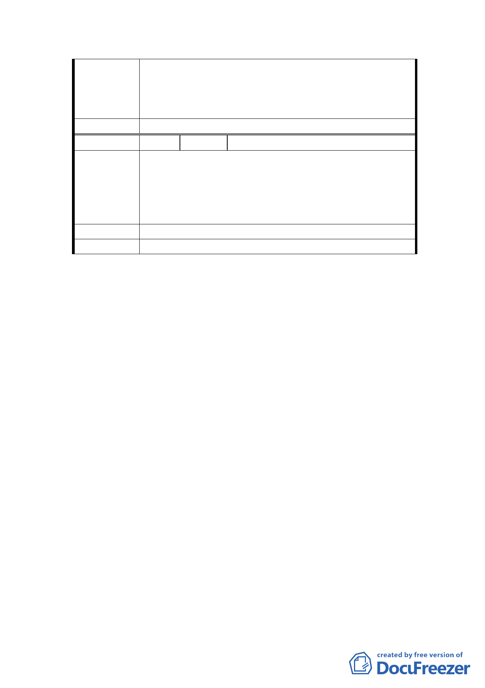

2. 要設專區，則如新竹縣湖口鄉湖口老街，真正有老
街存在才像，學學新竹縣政府！
3. 如規劃來不及，本區再請限建 10 年，好好詳細完
美規劃。
委員會決議 同編號 1 之決議事項 1。
編 號 6 陳情人 國立臺灣大學
本案主要計畫案都市計畫書第 3 頁載「…近期臺灣大
學因校務發展考量，於本區內陸續新建了數棟 7 至 10
陳 情 理 由 層之建築供學人宿舍…」乙節，查本校於該區新建學
人宿舍僅有 3 棟且為 5 至 7 層建物，周邊高層建物均
為私人興建，特予澄明。
建 議 辦 法 請惠予修正。
委員會決議 請文化局、發展局查明修正。
討論事項 四
案名：擬定臺北市大安區青田街保存區及聚落風貌保存專
用區細部計畫暨周邊地區都市設計管制事項案
說明：
一、 本件係市府以 95 年 11 月 15 日府授都規字第
09535496503 號，並自 95 年 11 月 16 日起公開展覽
30 天。
二、 法令依據：都市計畫法第 22 條、文化資產保存法第
33 條。
三、 申請單位：臺北市政府（文化局）。
四、 計畫範圍：詳計畫圖所示。
五、 變更理由及內容：詳計畫書。
六、 說明會日期：95 年 11 月 29 日（臺北和平長老教會
副堂，臺北市和平東路一段 183 巷 7 號）。
七、 公民或團體所提意見：共計 5 件。
決議：
23